res <- PRISM(Y = Y, A = A, X = X, verbose = FALSE)7. 可视化：五个绘图函数
StratifiedMedicine 包函数手册
包里有五个绘图函数，全部返回 ggplot2 对象，可以继续用 + 叠加图层。
plot.PRISM()：统一入口
## S3 method for class 'PRISM'
plot(x, type = "tree", target = NULL, grid.data = NULL, grid.thres = ">0",
prob.thres = ">0", tree.plots = "outcome",
nudge_out = 0.1, width_out = 0.5,
nudge_dens = ifelse(tree.plots == "both", 0.3, 0.1), width_dens = 0.5, ...)type |
画什么 | 状态 |
|---|---|---|
"tree"（默认） |
树结构 + 各节点估计 | ✅ |
"forest" |
总体与各亚组的森林图 | ✅ |
"PLE:waterfall" |
CATE 瀑布图 | ✅ |
"PLE:density" |
CATE 密度图 | ✅ |
"resample" |
重抽样分布 | ✅（必须先做重抽样） |
"heatmap" |
二维热图 | ❌ 已弃用且已损坏，见下文 |
type = "tree"
plot(res)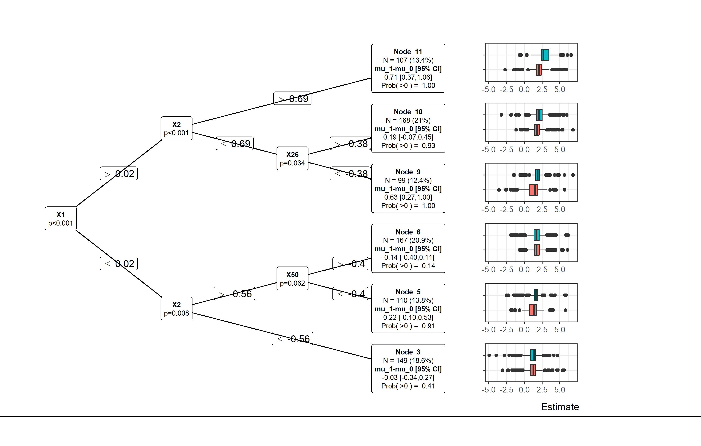
每个节点里画的是什么，由 tree.plots 控制：
tree.plots |
节点里画 |
|---|---|
"outcome"（默认） |
param = "dr" 时是双稳健的反事实估计箱线图；param = "lm" 或 ple = "None" 时是观测 \(Y\) 按 \(A\) 分组；生存结局是 Kaplan–Meier 曲线 |
"density" |
该节点治疗效应的概率密度（正态近似，或重抽样分布） |
"both" |
两者都画 |
"none" |
只画树结构 |
plot(res, tree.plots = "both")
#> Warning: Removed 1874 rows containing missing values or values outside the scale range
#> (`geom_area()`).
#> Warning: Removed 468 rows containing missing values or values outside the scale range
#> (`geom_area()`).
#> Warning: Removed 2034 rows containing missing values or values outside the scale range
#> (`geom_area()`).
#> Warning: Removed 930 rows containing missing values or values outside the scale range
#> (`geom_area()`).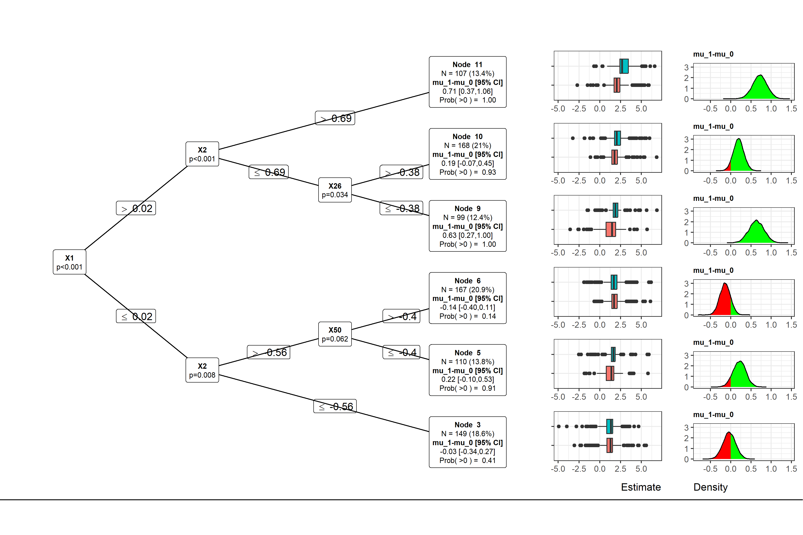
prob.thres 控制密度图的着色阈值与图例里的 \(P(\cdot)\)： ">0" 时高于 0 的部分用绿色；写成 "<1" 会把配色反过来 （生存结局下 param = "cox" 的默认就是 "<1"，因为 HR < 1 才是获益）。
nudge_out / width_out / nudge_dens / width_dens 是把节点里的子图 往上/下推和缩放的参数，直接透传给 ggparty。树很深、节点很多时需要调它们。
type = "forest"
plot(res, type = "forest")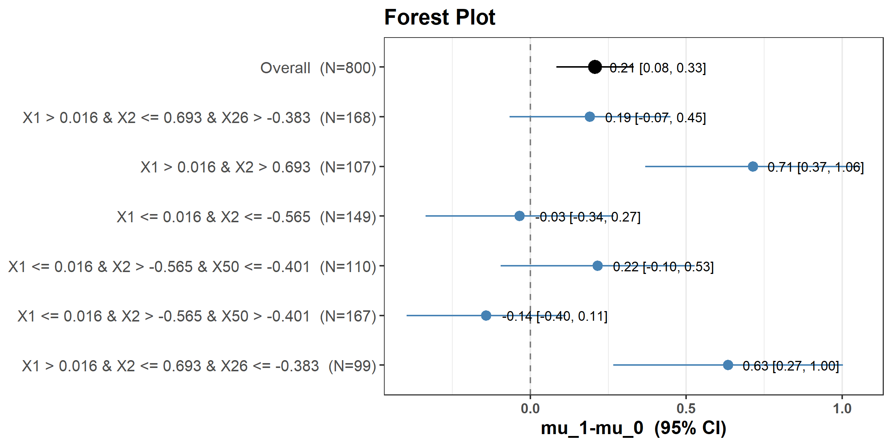
森林图给的是 param.dat 的图形版：一行总体 + 每个亚组一行。 没做重抽样时用的是正态近似区间；做了 Bootstrap 则是百分位区间。
type = "PLE:waterfall" 与 "PLE:density"
plot(res, type = "PLE:waterfall")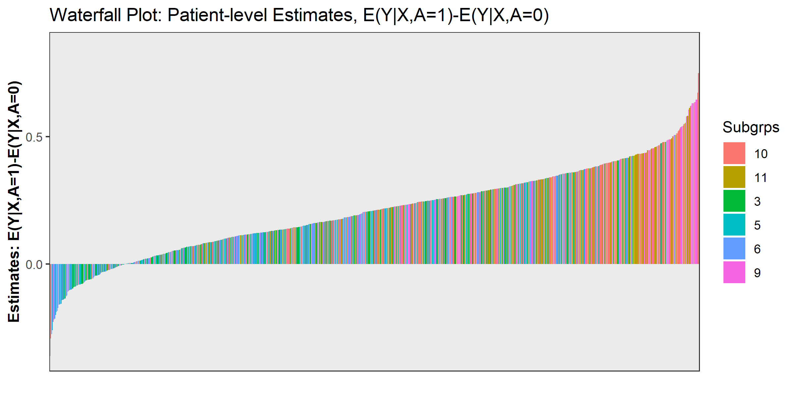
plot(res, type = "PLE:density")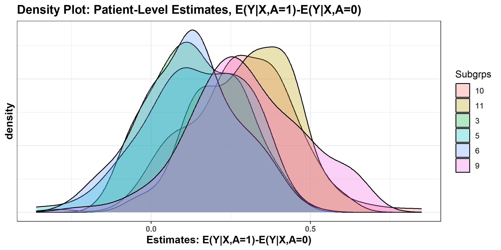
瀑布图把每个人的 CATE 从小到大排开。它非常容易被过度解读： 即使真实效应完全同质，估计出来的 CATE 也会因为噪声而呈现出一条斜线。 判断异质性是否真实，要看第 6 页的重抽样， 或者干脆做一次阴性对照再画一张同样的瀑布图对比。
type = "resample"
set.seed(1)
res_b <- PRISM(Y = Y, A = A, X = X, resample = "Bootstrap", R = 30, verbose = FALSE)
plot(res_b, type = "resample", target = "mu_1-mu_0") +
geom_vline(xintercept = 0, linetype = 2)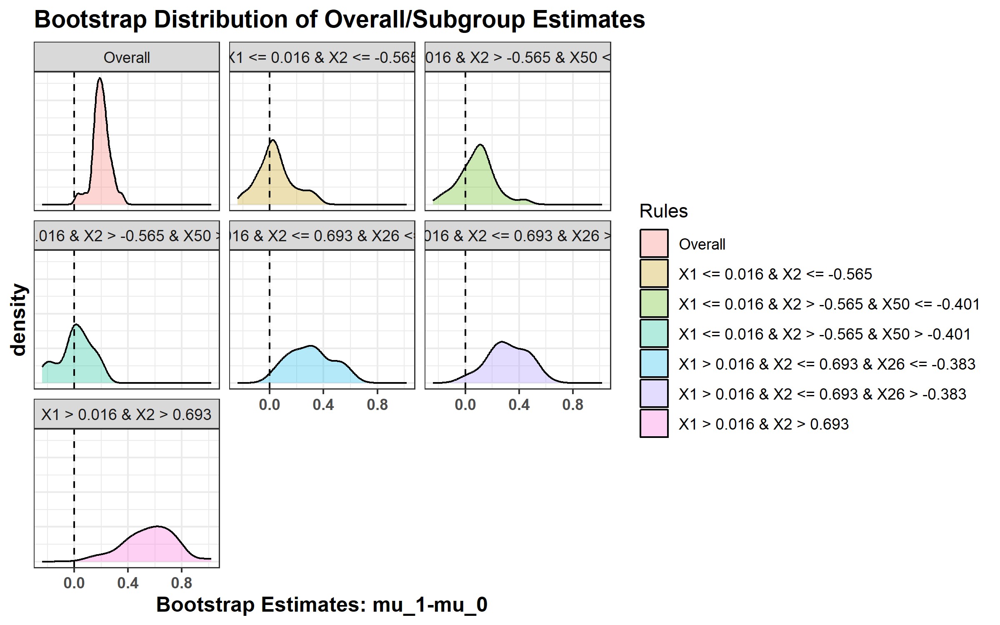
target 必须显式给出估计量的名字（从 param.dat$estimand 里取）。 没做重抽样就调用会报一个与病因无关的 UseMethod("left_join") 错误：
plot(res, type = "resample", target = "mu_1-mu_0")
#> Error in UseMethod("left_join"): no applicable method for 'left_join' applied to an object of class "NULL"type = "heatmap" 已经坏了
grid <- expand.grid(X1 = seq(-2, 2, by = 0.5), X2 = seq(-2, 2, by = 0.5))
plot(res, type = "heatmap", grid.data = grid)
#> Warning in plot_heatmap(x = x, grid.data = grid.data, grid.thres = grid.thres): 'plot_heatmap' is deprecated.
#> Use 'plot_dependence' instead.
#> See help("Deprecated")
#> Error in `$<-.data.frame`(`*tmp*`, "ind.ple", value = integer(0)): replacement has 0 rows, data has 64800内部函数 plot_heatmap() 第一行就是 .Deprecated("plot_dependence")， 而且它调用 predict(x, newdata = ..., type = "ple") 之后去取一个叫 PLE 的列—— 这个列名在现在的 predict.PRISM() 输出里已经不存在了（现在叫 diff_1_0）， 于是后续的 $<- 拿到长度 0 的向量而失败。
替代品是 plot_dependence(..., grid.data = )，见下文。 grid.thres 参数只服务于这条已废的路径，可以忽略。
plot_tree()
plot_tree(object, prob.thres = ">0", plots = "outcome",
nudge_out = 0.1, width_out = 0.5,
nudge_dens = ifelse(plots == "both", 0.3, 0.1), width_dens = 0.5,
dens_title = NULL, node_label = NULL, ...)plot(prism_obj, type = "tree") 内部就是调它。直接用它的好处有两个：
- 它也接受
submod_train对象，不必跑完整条PRISM()； - 它比
plot.PRISM()多两个参数——dens_title与node_label， 可以改密度图标题和节点标注文字。
s <- submod_train(Y, A, X, submod = "lmtree")
plot_tree(s, node_label = "治疗效应")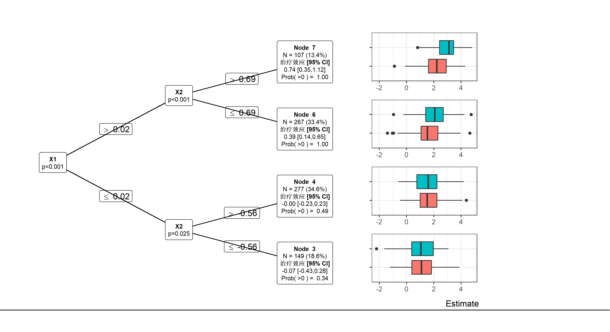
注意这棵树用的是全部 50 个协变量（没经过过滤），只切了 X1、X2， 比上面 PRISM() 那棵 6 节点的树干净——原因见 第 8 页。
警告
plot_tree() 接受 submod_train 对象，但 param = "dr" 时会崩
plot_tree(submod_train(Y, A, X, submod = "lmtree", param = "dr"))
#> Error in data.frame(estimand = mu_A0, est = eif_0, Subgrps = object$out.train$Subgrps): arguments imply differing number of rows: 1, 0, 800节点面板的绘制代码去 object$out.train 里找双稳健的影响函数列， 而 submod_train 对象里没有 PRISM 那一套字段，于是 data.frame() 拿到长度 1、0、800 三个不等长的向量。
submod_train 对象请用默认的 param = "lm" 再画； 想看双稳健估计的节点图，走完整的 PRISM()。
plot_importance()
plot_importance(object, top_n = NULL, ...)object 可以是 PRISM 对象，也可以直接是 filter_train 对象 （帮助页只写了前者，但示例用的是后者）。
plot_importance(res)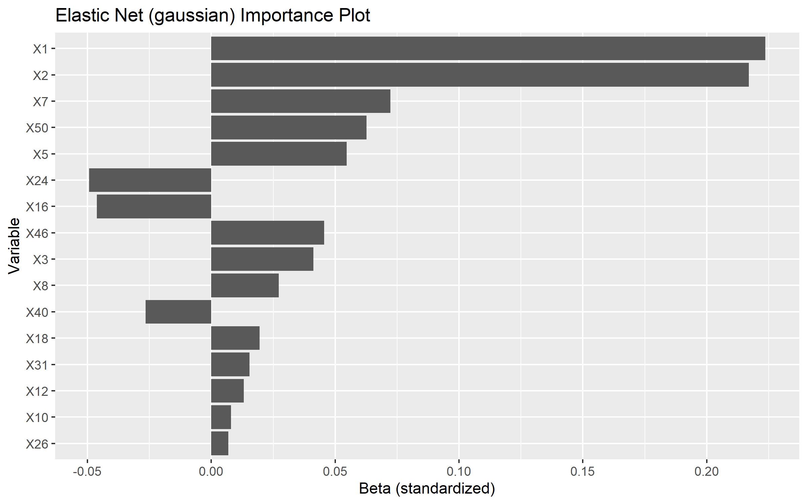
画的是 elastic net 的非零系数。默认设置下这是一张”预后重要性”图， 因为过滤器跑的是 \(Y \sim \text{ENET}(X)\)，治疗根本没进模型。
打开交互项之后才会出现 _trtA 条目，那些才是效应修饰候选：
res_i <- PRISM(Y = Y, A = A, X = X,
filter.hyper = list(interaction = TRUE), verbose = FALSE)
plot_importance(res_i)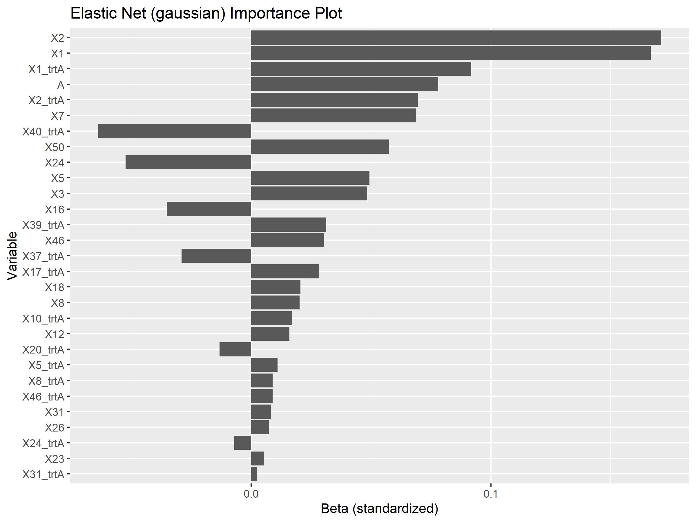
X1_trtA、X2_trtA 出现在图上，正是真值里的两个效应修饰变量。
警告
top_n 对 glmnet 分支无效
plot_importance() 的帮助页说 top_n 会”只显示最重要的 top_n 个变量”。 这只对 filter = "ranger" 成立——ranger 分支按 p 值排序后取前 top_n 个。 glmnet 分支的源码是：
VI.dat <- VI.dat[VI.dat$est != 0, ]
VI.dat$rank <- 1 # 所有变量的 rank 都写成 1rank 被硬编码成 1，top_n 的筛选条件恒成立，于是全部非零系数都会画出来：
nrow(plot_importance(res_i, top_n = 5)$data)
#> [1] 29ranger 分支则正常：
set.seed(1)
f_rf <- filter_train(Y, A, X, filter = "ranger", hyper = list(K = 50))
plot_importance(f_rf, top_n = 8)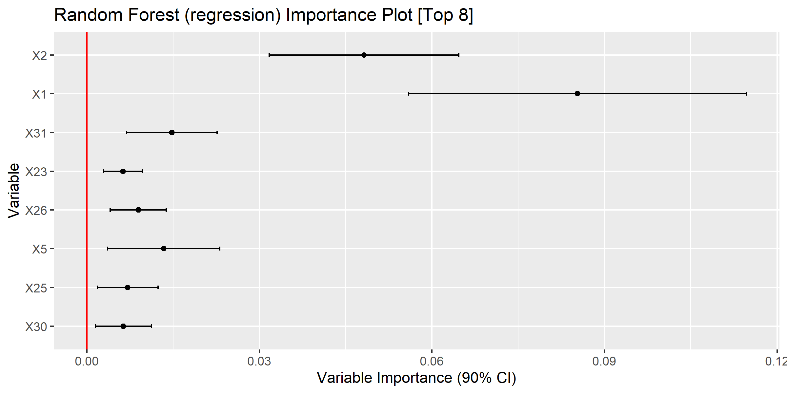
另外 glmnet 图的 y 轴标签写的是 “Beta (standardized)”， 但取的是 coef(cv.glmnet)——glmnet 内部标准化后会把系数变换回原始尺度， 所以那是原尺度的系数，坐标轴标签有误导。变量量纲不同时不能直接横向比较柱长。
plot_ple()
plot_ple(object, target = NULL, type = "waterfall", ...)只接受 ple_train 对象（不是 PRISM 对象）。 target 选 mu_train 里的哪一列，默认是治疗差。
set.seed(1)
p <- ple_train(Y, A, X, ple = "ranger", meta = "X-learner")
plot_ple(p)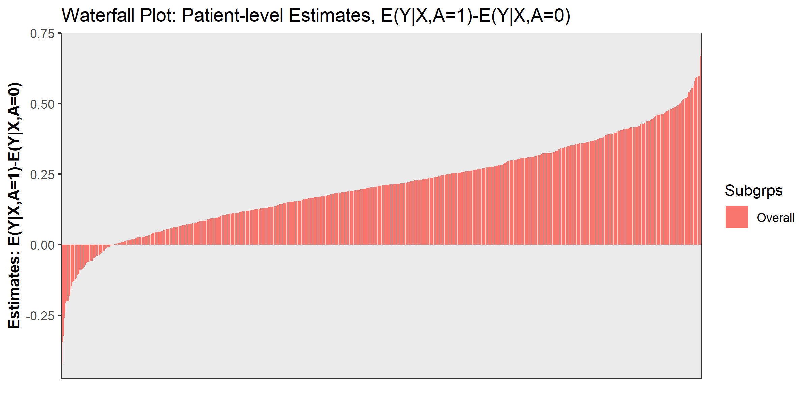
plot_ple(p, type = "density")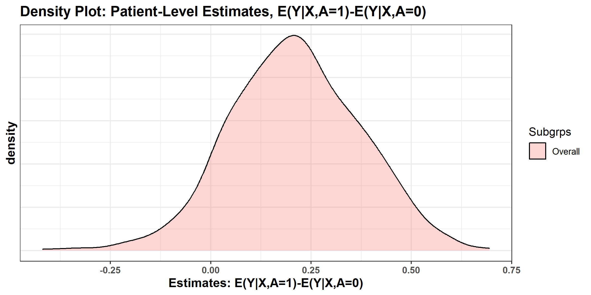
plot_ple(p, target = "mu_1")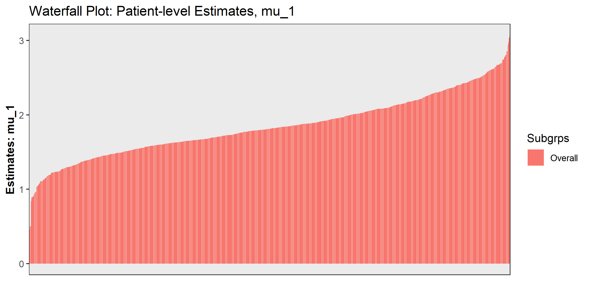
第三张图展示了 target 的用处：看某个臂下的绝对水平分布， 而不是效应差。做临床解释时”治疗组的预期结局有多高”往往比”效应差”更好沟通。
plot_dependence()
plot_dependence(object, X = NULL, target = NULL, vars, grid.data = NULL, ...)偏依赖图（PDP）：把某个变量在取值网格上逐点替换， 对全样本预测后取平均，看 CATE 随该变量怎么变。 接受 ple_train 与 PRISM 两种对象。
单变量
plot_dependence(p, X = X, vars = "X1")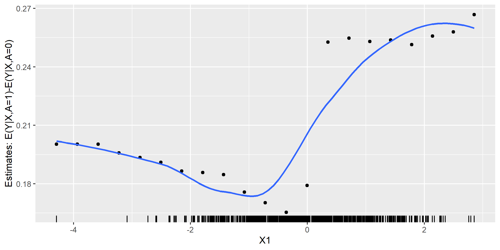
同样的图对一个纯预后变量（X3，真值里对 CATE 毫无影响）画出来：
plot_dependence(p, X = X, vars = "X3")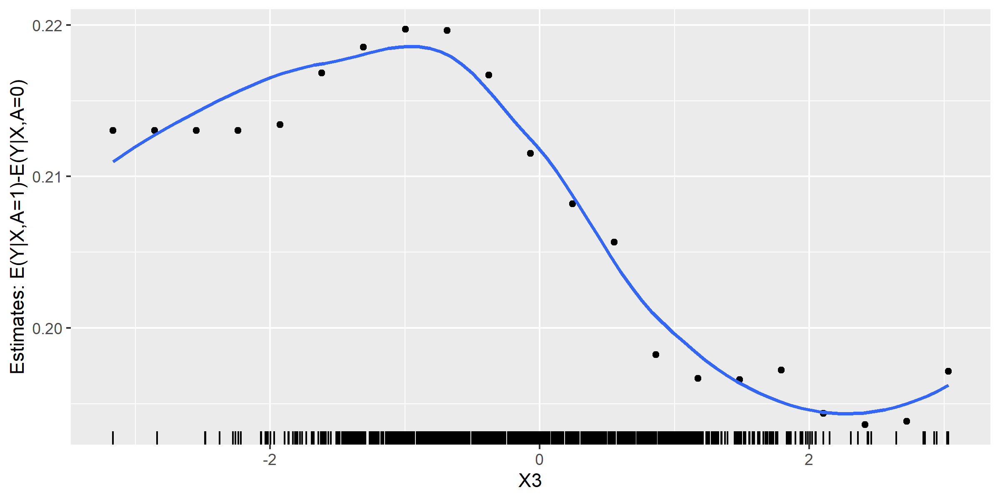
警告每张图的 y 轴各算各的，噪声会被放大到和信号一样高
X3 那张图看起来同样”有结构”，因为纵轴范围是按它自己的数据定的。 判读时必须比较 y 轴跨度：
sapply(c("X1", "X2", "X3"), function(v) {
d <- plot_dependence(p, X = X, vars = v)$data
round(diff(range(d[["est"]])), 4)
})
#> X1 X2 X3
#> 0.1015 0.0393 0.0261X1 的跨度是 X3 的四倍。只看形状不看刻度，很容易把噪声读成信号。
两个变量：热图
给两个变量时画的是热图，横纵轴各一个变量，填色是平均 CATE：
plot_dependence(p, X = X, vars = c("X1", "X2"))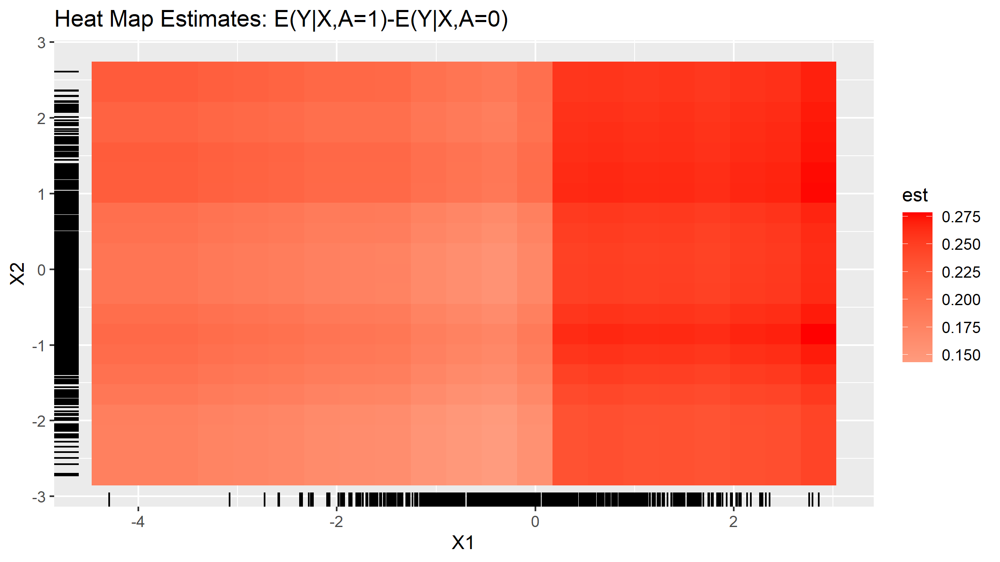
也可以自己指定取值网格（grid.data 优先于 vars）， 用来把范围限制在数据的主体区间内，避免边缘外推：
grid2 <- expand.grid(X1 = seq(-2, 2, by = 0.4), X2 = seq(-2, 2, by = 0.4))
plot_dependence(p, X = X, grid.data = grid2)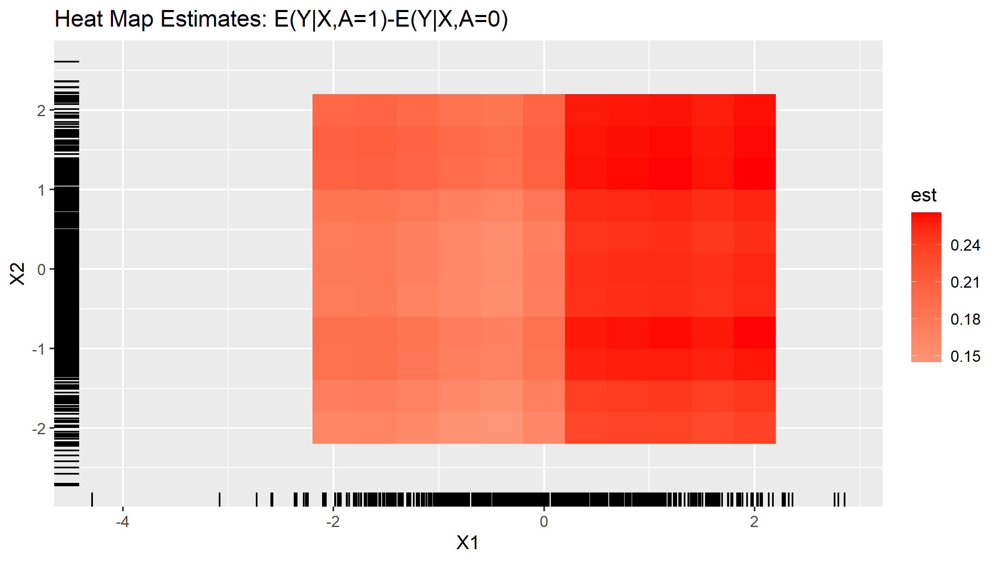
左下角（\(X_1\)、\(X_2\) 都低）估计效应最小，右上角最大—— 与真值（0 / 0.25 / 0.45 / 0.65 按 \(X_1\)、\(X_2\) 的中位数切）完全一致。 这是本包里最能把”两个变量的联合修饰作用”讲清楚的一张图。
三个变量会失败
帮助页写”2 到 3 个变量，若为 3 个则最后一个不能是连续变量”。 实测 vars 给三个变量时直接报错：
plot_dependence(p, X = X, vars = c("X1", "X2", "X3"))
#> Error in data.frame(grid.data, var3 = v): arguments imply differing number of rows: 441, 800走 grid.data 也一样——第三列若是字符/因子，函数会把它写进 X 里的数值列， 分面变量随后拿到 NA，ggplot2 报 scale_id must not contain any "NA"：
plot_dependence(p, X = X, grid.data =
expand.grid(X1 = c(-1, 0, 1), X2 = c(-1, 0, 1),
X3 = c("low", "high")))
#> Error in `scale_apply()`:
#> ! `scale_id` must not contain any "NA".要用三变量分面，必须先把那个变量在 X 里就造成因子再重新拟合 ple 模型。
小结
| 想看什么 | 用哪个 |
|---|---|
| 亚组结构与各组效应 | plot(res) / plot_tree() |
| 各亚组效应的并排比较 | plot(res, type = "forest") |
| 个体效应的分布 | plot_ple()（注意过度解读风险） |
| 哪些变量重要 | plot_importance()，且必须配 filter.hyper = list(interaction = TRUE) |
| 某变量如何调节效应 | plot_dependence(vars = )，比较 y 轴跨度 |
| 两变量的联合调节 | plot_dependence(grid.data = ) |
| 估计有多不稳 | plot(res_b, type = "resample") |
本页涉及的帮助主题
plot.PRISMplot_treeplot_importanceplot_pleplot_dependence
下一页：8. 实测清单与工作流。